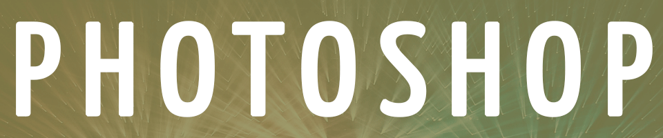
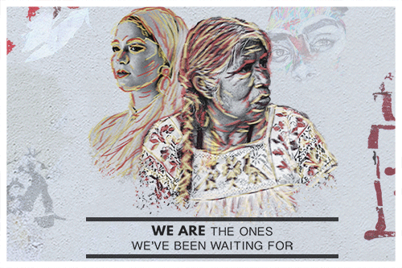

Home
Photoshop
Illustrator
Animate
InDesign
Contact

When we started the section of Photoshop I was very excited to see what else I could expand my skills in, I have worked with Photoshop for a couple of years already so a lot of what we were doing in class came more natural to me. For the final assignment I decided to demonstrate my skills by making an image that was both powerful and thought provoking towards the reader.